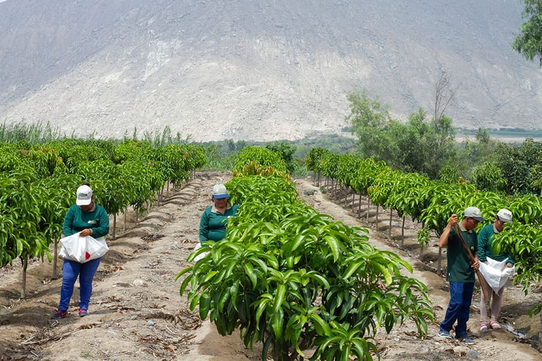
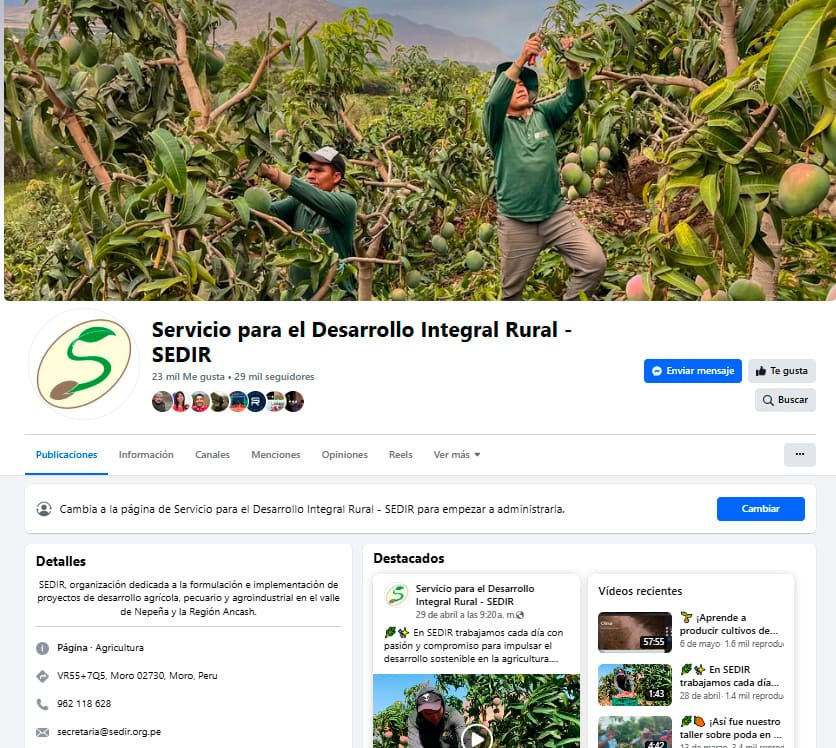
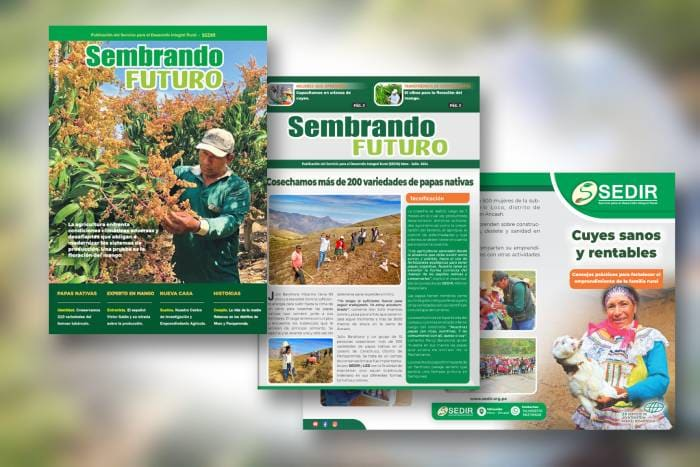
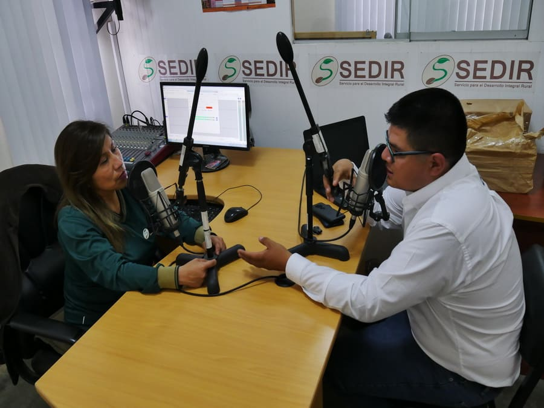

Transferencia de Tecnología Agrícola
Mejorar la productividad y sostenibilidad del sector agropecuario mediante la difusión de conocimientos y tecnologías adaptadas a las necesidades de los productores.


Parcelas Demostrativas
Espacios de aprendizaje donde productores observan y evalúan nuevas técnicas agrícolas en tiempo real, incluyendo variedades mejoradas y prácticas agroecológicas.

Creación de Contenidos
Casos de éxito y buenas prácticas difundidos a través de videos, notas de prensa, entrevistas, webinars y redes sociales para democratizar el acceso al conocimiento.

Materiales Impresos
Revistas, boletines y trípticos con información clara para productores sin acceso a internet, garantizando el alcance del conocimiento a toda la comunidad.
Ver Galería →
Radio SEDIR
Espacio dedicado a la difusión de información técnica, entrevistas con especialistas y programas educativos, llegando a más productores de manera accesible.